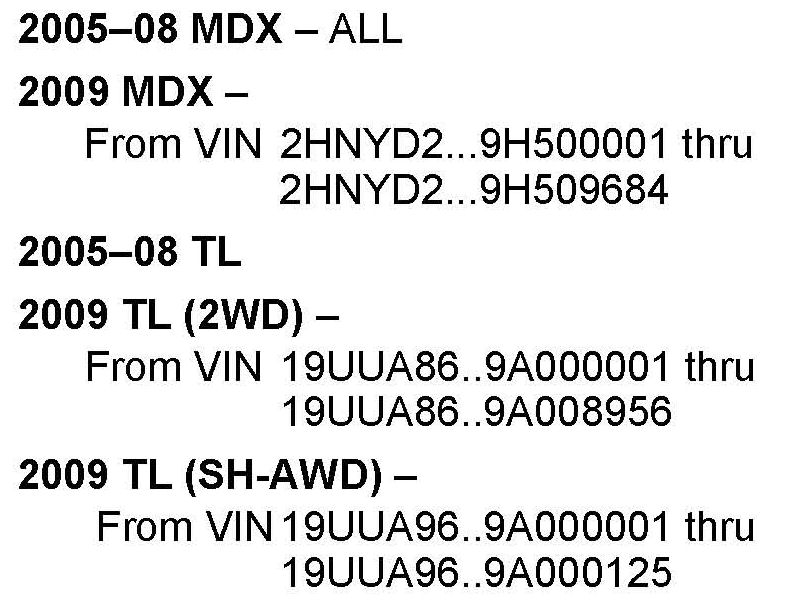
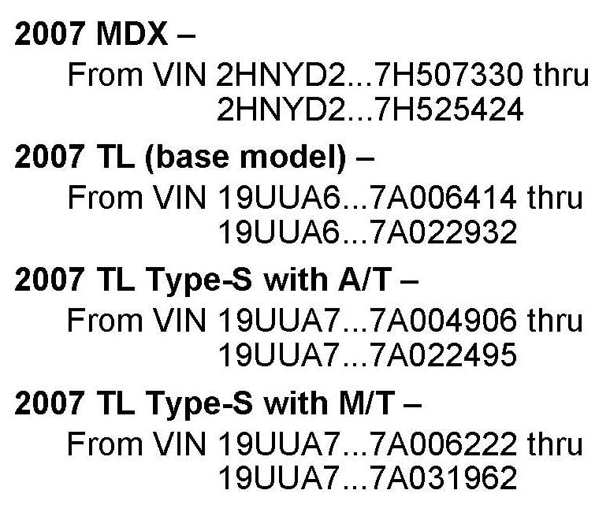
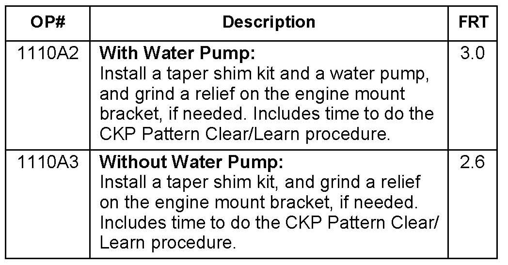
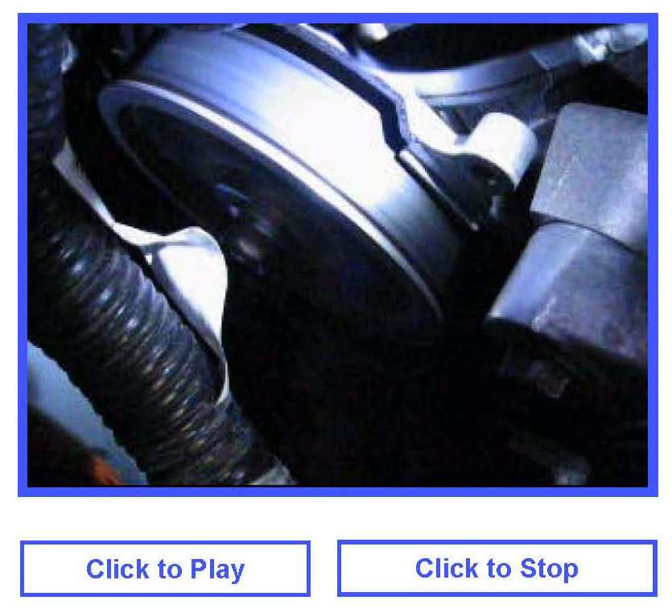
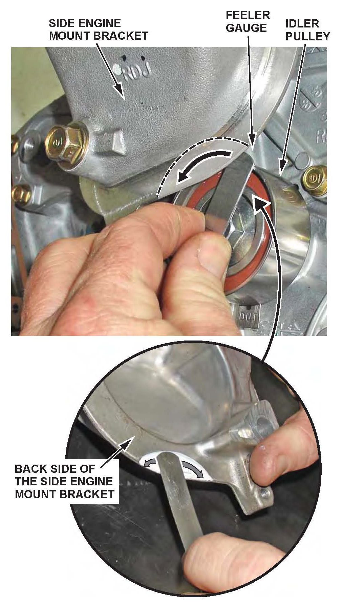
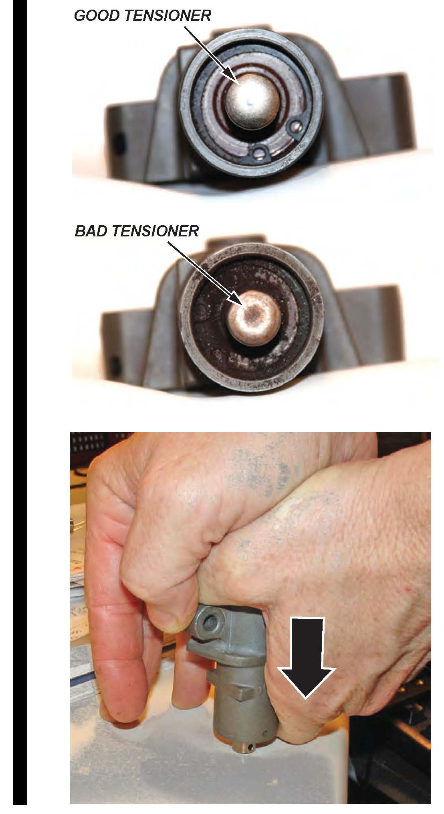
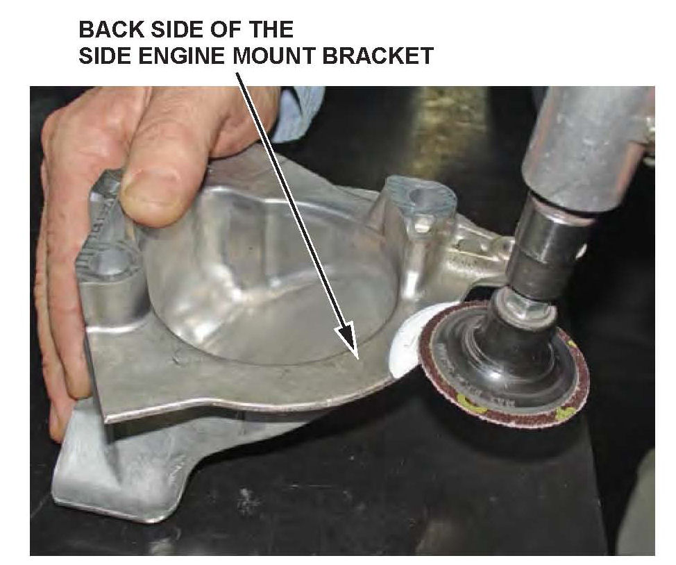
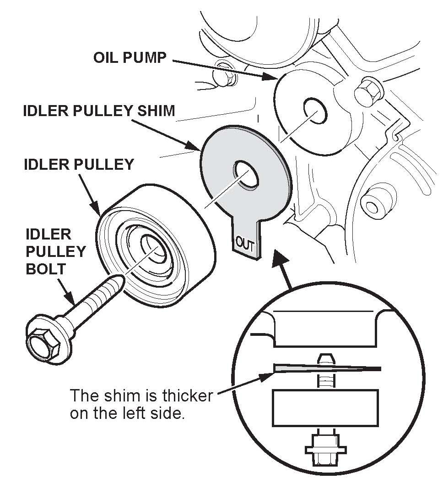
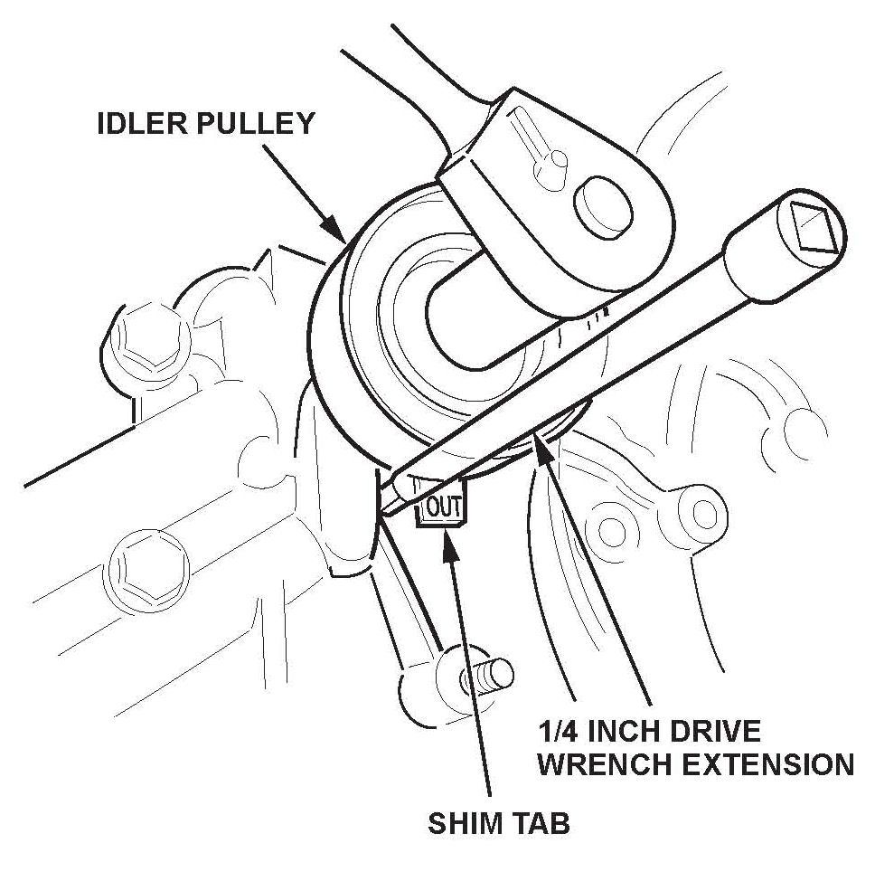

Engine - Chirping Noise From Lower Timing Belt Area
08-031February 17, 2011
Applies To:
See VEHICLES AFFECTED
Chirp From the Timing Belt Area
(Supersedes 08-031, dated May 21, 2010, to revise the information marked by the black bars and asterisks)
REVISION SUMMARY
*Under REPAIR PROCEDURE,step 8, a note about inspecting the timing belt auto-tensioner was added.*
SYMPTOM
A chirp is coming from the lower timing belt area. The noise is most prominent at idle, usually after the engine has warmed up.
PROBABLE CAUSE
The idler pulley mounting surface is tilted, causing the edge of the timing belt to rub against the side of the drive pulley (gear).

VEHICLES AFFECTED
CORRECTIVE ACTION
Install a taper shim kit and, if needed, grind a deeper relief on the engine mount bracket.

The vehicles below also require water pump replacement:
PARTS INFORMATION
Taper Shim Kit (Contains taper shim, timing belt, and timing belt drive pulley [gear]):
2005 models: P/N 04148-RCA-305
2006-2009 models: P/N 04148-RCA-306
Water Pump (2007 models only):
P/N 19200-RDM-A02
REQUIRED MATERIALS
Hondalock 1 (one container repairs about 10 vehicles):
P/N 08713-0001
WARRANTY CLAIM INFORMATION

The normal warranty applies.
Failed Part: P/N 15100-RCA-A03
Defect Code: 07403
Symptom Code: 04201
Skill Level: Repair Technician
DIAGNOSIS

NOTE:
If you are viewing this service bulletin on ISIS and your computer has sound, click on Click to Play to hear an example of the noise.
1. Remove the drive belt:
^ Refer to Section 4 of the appropriate service manual, or
^ Online, enter keywords DRIVE BELT, and select Drive Belt Replacement from the list.
2. Start the engine.
Do you still hear the noise?
Yes - Go to REPAIR PROCEDURE
No - Reinstall the drive belt, then continue with normal troubleshooting procedures.
REPAIR PROCEDURE
NOTE:
On certain 2007 vehicles, you will also be replacing the water pump (see CORRECTIVE ACTION). All other non-water pump replacement steps apply to all affected vehicles.
1. with water pump replacement only: Drain the engine coolant into a clean container, and save it for reuse:
^ Refer to Section 10 of the appropriate service manual, or
^ Online, enter keyword COOLANT, and select Coolant Replacement from the list.
2. Set the engine to TDC (top dead center).
3. Remove the crankshaft pulley:
^ Refer to Section 6 of the appropriate service manual, or
^ Online, enter keyword PULLEY, and select Crankshaft Pulley Removal and Installation from the list.
4. Remove the timing belt covers:
^ Refer to Section 6 of the appropriate service manual, or
^ Online, enter keywords TIMING BELT, and select Timing Belt Removal from the list.

5. Try to insert a 0.95 mm feeler gauge between the top edge of the timing belt idler pulley and the back of the side engine mount bracket overhanging the pulley. This measurement is used to determine if step 12 is required.
NOTE:
Remove the feeler gauge from its holder to get a more accurate measurement.
6. with water pump replacement only: Unbolt the CKP (crankshaft position) sensor (if applicable), and set it aside. Do not disconnect the CKP harness connector.
7. Remove the engine mount bracket.
8. Remove the timing belt.

NOTE:
Remove the timing belt auto-tensioner, and inspect the tip of the piston for signs of damage. Test the tensioner by pushing it down against a flat surface. The tensioner should not compress. Replace it if it is damaged or if it compresses.
9. With water pump replacement only: Remove the timing belt adjuster.
10. With water pump replacement only: Remove the water pump.
11. Remove the timing belt idler pulley.

12. If the feeler gauge did fit in step 5, go to step 13. If the feeler gauge did not fit in step 5, remove the side engine mount bracket. Using a die grinder with a 2-inch, 50-grit grinding disc (or equivalent) and the circular casting offset as a guide, grind the side engine mount bracket until the lip measures 2 mm thick with a caliper or micrometer.
13. with water pump replacement only: Replace the water pump, and reuse the coolant you removed in step 1:
^ Refer to Section 10 of the appropriate service manual, or
^ Online, enter keyword WATER, and select Water Pump Replacement from the list.
14. with water pump replacement only: Reinstall the timing belt adjuster.

15. Place the idler pulley shim between the idler pulley and the oil pump housing, and loosely install the idler pulley bolt with Hondalock 1 applied to its threads. Make sure to follow the assembly instructions on the Hondalock 1 container.
NOTE:
The shim is tapered from left to right. The word "OUT" is painted in white and stamped into the tang of the shim. It should be readable after the shim is installed.

16. When tightening the idler pulley bolt, use the square end of a 1/4 inch drive ratchet extension to keep the shim's tab in the correct position. After you tighten the idler pulley bolt to 44 N~m (33 lb-ft), bend the shim's tab slightly towards the oil pump housing to keep it away from the idler pulley.

17. Install a new timing belt drive (gear) pulley:
^ Refer to Section 6 of the appropriate service manual, or
^ Online, enter keywords TIMING BELT, and select Timing Belt Drive Pulley Replacement from the list.
18. Install a new timing belt:
NOTE:
Use the (new belt) Timing Belt
Replacement procedures, not (used belt) Timing Belt Installation procedures.
^ Refer to Section 6 of the appropriate service manual, or
^ Online, enter keywords TIMING BELT, and select Timing Belt Replacement from the list.
19. Reinstall the CKP sensor (if applicable), and torque its bolt to 9.8 Nm (7.2 lb-ft). If the water pump was replaced, make sure there is no coolant in the CKP sensor connector.
20. Reassemble the remaining parts using the appropriate service manual procedures. If you replaced the water pump, make sure to bleed any air from the cooling system after refilling with the coolant you drained in step 1.
21. Do the CKP pattern clear/CKP pattern learn procedure. Go to the appropriate procedure below.
NOTE:
If you don't do the CKP pattern clear/learn procedure, the PCM may detect misfire when there is none, and possibly set DTC(s) P0300 through P0306.
CKP Pattern Clear/Learn Procedure
2005~06 MDX
NOTE:
^ The ECT must be at least 176 degrees F (80 degrees C).
^ Before doing this procedure, check "PULSER F/B LEARN" and "PULSER F/B LEARN (HIGH RPM)" in the DATA LIST with the HDS. If both values show N/A, this procedure is not needed.
^ If only PULSER FIB LEARN (HIGH RPM)" shows N/A, skip steps 7 through 9.
1. With the engine stopped, clear the CKP pattern.
2. Turn the ignition switch to LOCK (0).
3. Turn the ignition switch to ON (II), and wait 30 seconds.
4. Test-drive the vehicle on a level road: Decelerate with the throttle fully closed from an engine speed of 2,500 rpm to 1,000 rpm with the A/T in 2.
5. Stop the vehicle, but keep the engine running.
6. Check PULSER FIB LEARN in the DATA LIST with the HDS. If it is NOT COMPLETED, go to step 4. If it is COMPLETED, go to step 7.
7. Test-drive the vehicle on a level road: Decelerate with the throttle fully closed from an engine speed of 5,000 rpm to 3,000 rpm with the A/T in 2.
8. Stop the vehicle, but keep the engine running.
9. Check the PULSER F/B LEARN (HIGH RPM) in the DATA LIST with the HDS. If it is NOT COMPLETED, go to step 7. If it is COMPLETED, go to step 10.
10. Turn the ignition switch to LOCK (0).
11. Turn the ignition switch to ON (II), and wait 30 seconds. The CKP learning procedure is complete.
2007-09 MDX
2005-08 TL
2009 TL
1. Connect the HDS to the data link connector (DLC) located under the driver's side of the dashboard.
2. Turn the ignition switch to ON (II).
3. Make sure the HDS communicates with the ECM/PCM. If it does not, go to DLC circuit troubleshooting in the appropriate service manual.
4. Select CRANK PATTERN in the ADJUSTMENT MENU with the HDS.
5. Select CRANK PATTERN LEARNING with the HDS, and follow the screen prompts.

Disclaimer